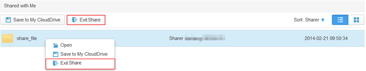

After you exit a share, you cannot join in the share again. The shared file or folder is still in other recipients' StorBox. If you are the sharer, you can cancel a file or folder share or remove recipients of a shared file or folder.
Perform the following steps to exit share:
- Log in to StorBox website.
- Click .
- Right-click the file or folder and choose Exit Share.
 NOTE:
NOTE: Alternatively, you can click the blank area to the right of the file or folder and choose Exit Share above the file list.